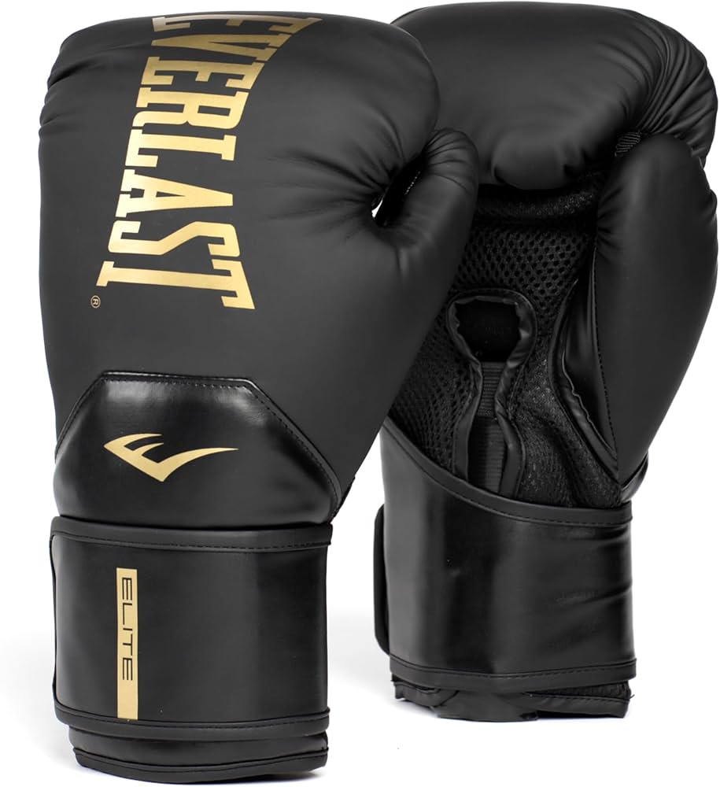
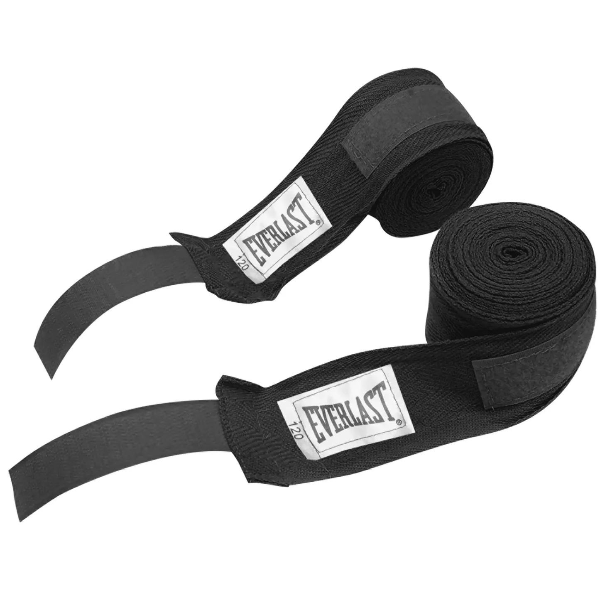
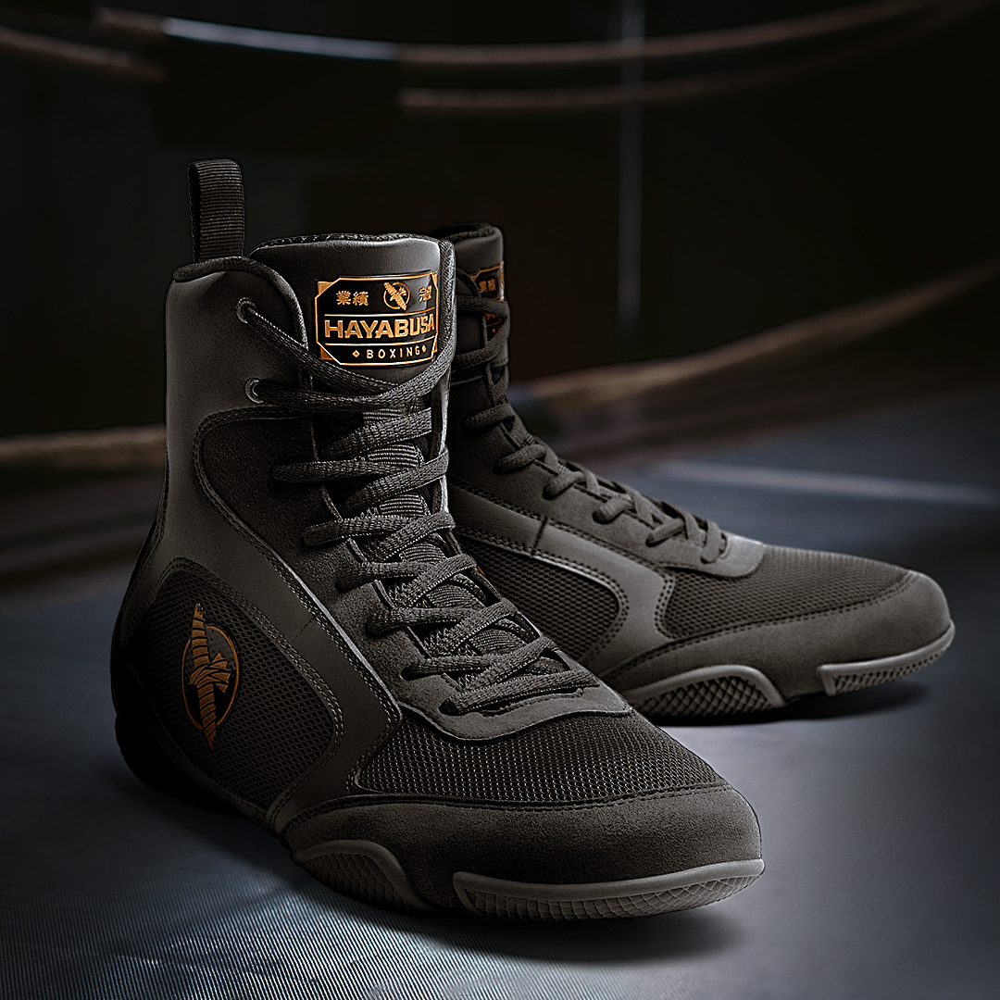
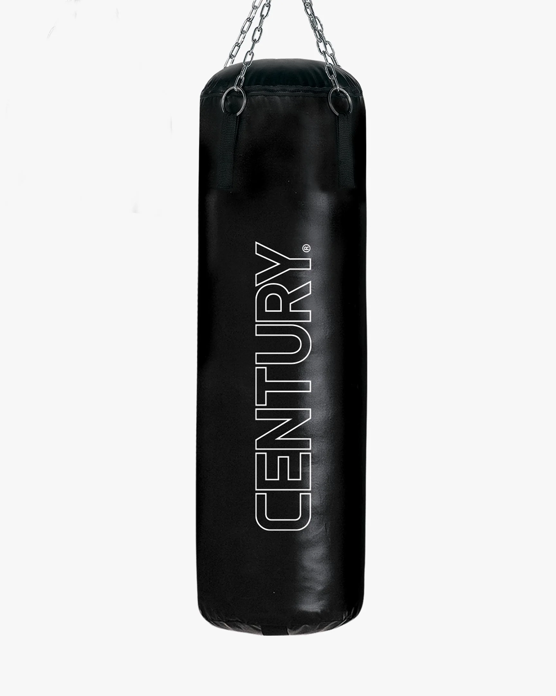

Gloves
Since boxing involves forceful, repetitive punching, precautions must be taken to prevent damage to bones in the hand.
Gloves are used to protect the hands from blunt injury, allowing boxers to throw punches with more force than if they did not use them.

Hand Wraps
Hand wraps are used to secure the bones in the hand and provide support to the wrists during punching.

Mouth Guard
A mouthguard is important to protect the teeth and gums from injury, and to cushion the jaw, resulting in a decreased chance of knockout.

Boxing Boots/Shoes
Boxing boots feature specialized rubber soles with treads designed to give you maximum traction when pushing off into a punch or stepping away defensively.
Mid-top boxing shoes (like mine) offer an extended lacing system that securely locks your ankle and Achilles tendon in place, drastically lowering the risk of rolled ankles, sprains, and hyper-extensions during high-intensity footwork.

Punching Bag
Boxers practice their skills on several types of punching bags, but the one I use most frequently is the large cylindrical "heavy bag" filled with sand or a synthetic substitute, which is used to practice power punching and body blows.